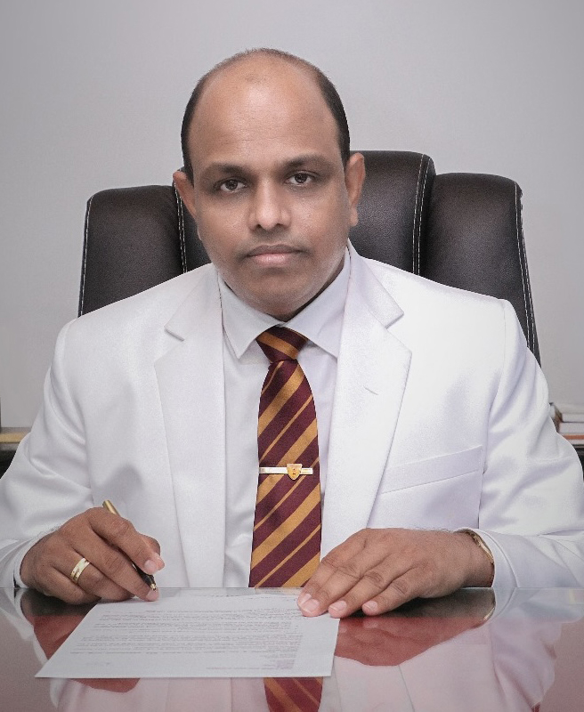

|
ANANDA COLLEGE |
HOME ABOUT REGISTATION
|
Ananda College is a prestigious Buddhist boys' school in Colombo, Sri Lanka. Established in 1886 by Colonel Henry Steel Olcott, the college has played a significant role in shaping the education and values of generations of students. It is known for its commitment to academic excellence, discipline, and leadership development. The school emphasizes a well-rounded education, excelling in academics, sports, and extracurricular activities, including debating, scouting, and cultural events. With a strong foundation in Buddhist principles, Ananda College has produced many influential leaders in Sri Lanka, making it one of the most respected educational institutions in the country. |
The Principal of Ananda College is responsible for overseeing all administrative, academic and co-curricular activities, ensuring a safe and effective teaching learning environment and fostering a positive school culture. He is the head of the College Management Committee, President of the Old Boys' Association and the President of the School Development Society.
|  |
Message from the principleIt is with immense pride that I address you as the Principal of Ananda College, Sri Lanka's pioneering Buddhist Educational Institute. Ananda College has a distinguished history of nurturing young minds and instilling values that transform students into responsible global citizens.As the Principal, I am honored to lead this beacon of educational excellence, representing the rich cultural and religious heritage of our beloved Sri Lanka.Our mission at Ananda College extends beyond academic achievement; we aim to cultivate well-rounded individuals who excel in their fields and uphold the values of respect, tolerance, and inclusivity. We believe that today's satisfied scholars are tomorrow's satisfied citizens, poised to shape a brighter future for all. Our vision is to provide a holistic education rooted in Buddhist principles, empowering our students to face the challenges of the modern world with confidence, compassion, and integrity. As we look to the future, we remain committed to fostering a culture of innovation, critical thinking, and environmental consciousness, preparing our students to lead in an ever-evolving global community.We aspire to position Ananda College as a role model in education, inspiring schools and communities worldwide to embrace our ethos of inclusivity and excellence. Together, let us nurture a generation of compassionate and visionary leaders who will contribute to the collective betterment of humanity. Thank you for your unwavering support in this noble. |

In the late 19th century, under the guidance of Hikkaduwe Sri Sumangala Thera, a new chapter began for Buddhist education in Sri Lanka.
On a historic day, November 1, 1886, the Buddhist Theosophical Society inaugurated an English-Buddhist school at 19 Prince Street, Pettah.
This humble beginning saw just 37 eager students, but it was the spark that would ignite a legacy.
As the school grew, it moved to 61 Maliban Street in 1888, accommodating 130 boys. The visionary C. W. Leadbeater became its first principal,
laying the foundation for what would become Ananda College. By March 1889, the school was officially registered, boasting 120 students,
with J. P. R. Weerasuriya becoming the first student to pass the prestigious Cambridge junior examination. That same year, A. E. Bultjens,
a Cambridge graduate and devout Buddhist, took over as principal.
The school faced challenges, including a controversy due to its proximity to a Catholic school, prompting another move to 54 Maliban Street in 1890.
However, this move only fueled its growth, with student numbers rising to 200 by 1892 and 270 by 1894. The generous donation of 3.2 acres of land by
Mr. Tudor Rajapaksha led to the school's relocation to Maradana, where, on August 17, 1895, it was proudly renamed Ananda College Colombo.
R. A. Mirando served as its manager until his passing during the 1915 riots.
Under the leadership of Patrick de Silva Kularatne in 1918, the school's enrollment skyrocketed from 450 to 1,000 students within two years.
With a growing budget and an expanding student body, Ananda College continued to flourish. By 1961, it had officially transitioned into a government school,
securing its place as a cornerstone of education in Sri Lanka.
The Ananda College Old Boys Association (ACOBA) was established in 1908, under the leadership of then Principal of Ananda College Don Baron Jayatilaka.
The first Secretary of the Association was C.M. Raja. There are no records as to who the first Treasurer was, but Mr. J. Ratnasara has held the position of
Treasurer in 1916. Also no record of having written rules and regulations or a constitution for the ACOBA at the beginning.
The Principal of Ananda College was ex-officio the President of the ACOBA at the early years. The purpose of founding the ACOBA was to assist the school
in conducting the annual sports meet and also arranging the annual dinner was another objective.
There had been no life memberships, but the first annual membership fee was Rs. 4/-. It is recorded that the first dinner organized by the
ACOBA was held on 11th August 1916 at the Olcott Memorial Hall, under the leadership of then Principal Fritz Kunz.
“Ananda College Journal” published in 1914, “The Anandian” printed in 1924. “The Anandian Jubilee Number” published in 1936 to mark the
golden jublee of Ananda College, “The Anandian Diamond Jubilee Number” published in 1946 on account of 60th anniversary of Ananda College
carried achievements of distinguished Old Anandians and also the news of ACOBA. It had been the practice to have the annual sports meet of
the College, day following the annual dinner of the Old Boys. This tradition had been followed for a long period of time. The annual sports
meet day was known as the Old Boys Day.
The first branch office of ACOBA was established as Up Country (Kandy) Branch on 3rd February 1929. The first exhibition and trade fair
organized by ACOBA was held from 31st October to 6th November 1936, under the leadership of then Principal and OBA President P. De S. Kularatne.
In December 1955, a distinguished Old Anandian S.A. Wijayatilake was appointed as Principal of Ananda College and was ex-officio the President of
ACOBA. He was the first old Anandian to be appointed so.
The tradition of Ananda Principal becoming ex-officio President of ACOBA was changed by amending the rules (constitution) in 1960. As per the provisions of the
new rules (Constitution) passed by the members on 14th February 1960, a distinguished Old Anandian Mr. D.W. Rajapathirana then Governor of Central
Bank was elected as the President of ACOBA. Since then the Principal of Ananda College was ex-officio the patron of ACOBA.
The constitution of the ACOBA had been amended on several occasions to suit then situations by broadening the objects, offering different
categories of membership (ie. Life, Honorary) expanding the composition of Executive Committee, accommodating the affiliated group etc.
Ananda College Development Fund was established under the ACOBA in the year 1970.
There was a structured change in the constitution to be in line with the Government regulations in the year 2017, since then the Principal of
Ananda College was Ex-Officio the President of Old Boys Association and in addition an Old Anandian is elected as the Executive President of ACOBA.
The ACOBA had been involved in many fund raising events such as exhibitions, trade fairs, carnivals, walks, lotteries, etc.
to finance various projects undertaken by them for the benefit of the students of the College. To name a few of them, in 1923 construction of
second hostel building, in 1953 Science Block, in 1978 Ananda Play Ground in 1986 Centenary Building (Administration Block), in 1993 the
main Swimming Pool, in 2000 the Beginners Pool, in 2001 Statue of Col. Henry Steel Olcott, complete renovation and re-furbishment of
Kularatne Hall, construction of Ranviru Memorial in 2009.
It is not only the development of infrastructure but also ACOBA engaged in donating sponsorships to needy Ananda students annually.
The news of ACOBA are published in “Anandaya” newsletter publication in regular intervals.The “Anandaya” book on history of Ananda Collage
from 1886 to 2011 which was written during the presidency of Tilak Karunaratne was published by the ACOBA in 2017.
Issue of commemorative silver coin with face value of Rs. 2,000/- by the Central Bank of Sri Lanka in 2011 to mark the 125th Anniversary of
Ananda Collage was also at the request of ACOBA.
Ananda Collage Old Boys Association, Centenary volume 1908 - 2008 the hundred years history of ACOBA, was published in 2008.
Ananda Collage Old Boys Association, together with over 40 Old Anandian age and geographical groups, domestic and overseas gather together
to serve Mother Ananda over generations.
|
The Counselling Unit of Ananda College, serves as a vital support system for our students, ensuring their emotional well-being and personal
development. Under the guidance of Mrs. Hemali Kolamunnage, the unit provides a safe and confidential space where students can seek assistance
in overcoming academic, personal, and social challenges.
Recognizing the importance of mental well-being in a student's overall success, the unit offers individual counselling sessions, group discussions, and various awareness programs. These initiatives help students develop essential life skills such as stress management, emotional resilience, and effective decision-making. The unit also conducts workshops on time management, self-motivation, and coping strategies to assist students in balancing their academic and extracurricular commitments. |
|
By fostering a supportive and understanding environment, the Counselling Unit plays a crucial role in guiding students toward a positive and well-rounded school experience. Through professional guidance and a compassionate approach, we strive to empower our students with the confidence and emotional strength needed to navigate their school years successfully. |
|